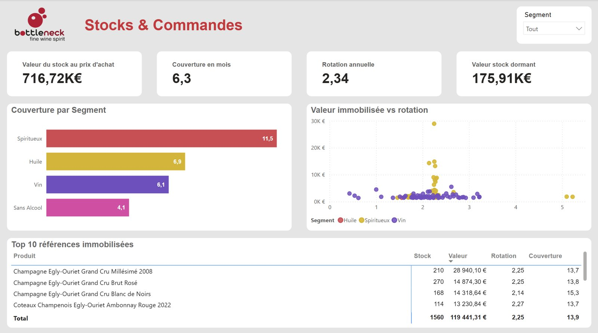
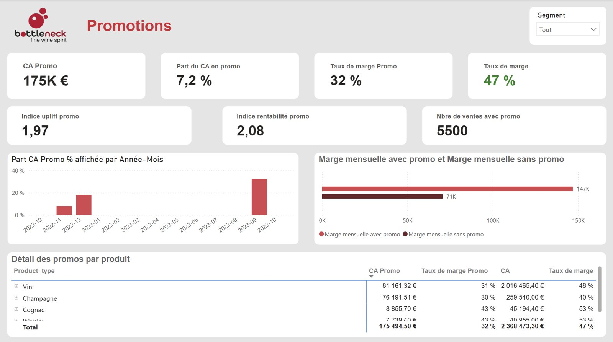

BottleNeck, de la donnée brute à la donnée fiable
Projets 6 et 9 du parcours, et projet amélioré avec l’IA. Python, pandas, Pandera, SQLite, Power Query, Power BI, DAX.
Contexte et besoin métier
BottleNeck, caviste en ligne, pilote son activité à partir de trois sources qui ne se parlent pas : son ERP, l’export de son site WordPress et une table de liaison tenue à la main. Le responsable des ventes avait besoin de chiffres fiables pour son comité de direction, puis d’un outil de pilotage pour suivre ses marges, ses stocks et ses promotions.
Données
Trois exports mensuels, soit 825 références dans l’ERP et 1 513 lignes côté site, puis une base SQLite de 22 300 lignes couvrant une année d’activité. Ces données comportaient des identifiants incompatibles entre les outils, des prix et des stocks négatifs, des lignes d’images mêlées aux produits et des descriptions polluées par du code HTML.
Démarche
Le projet s’est construit en trois temps. J’ai d’abord rapproché et nettoyé les trois exports en Python pour calculer le chiffre d’affaires, les marges et la valeur du stock, et les présenter au comité de direction.
Quelques mois plus tard, j’ai comparé quatre méthodes d’accès aux données avant de retenir Power Query, puis corrigé quatre anomalies de la base (séparateur décimal, 62 % de valeurs manquantes, formats de dates incompatibles, 110 références orphelines). J’ai construit dans Power BI un tableau de bord de six pages, organisé autour des trois questions de l’entreprise : les marges, les stocks et les promotions.
Enfin, en reprenant le premier projet avec l’appui de l’IA, j’ai transformé les vérifications manuelles en quinze règles de validation automatiques écrites avec Pandera. J’ai comparé le code généré par ChatGPT à une construction guidée et testée règle par règle, puis éprouvé les règles sur un export volontairement dégradé.

Résultats et impact
Le tableau de bord a mis en évidence 176 k€ de stock dormant, soit un quart de la valeur du stock, concentré sur quelques champagnes d’un même producteur. Il a aussi montré une érosion de 1,5 point de marge sur l’année et des promotions placées sur les mois déjà forts, avec un taux de marque de 32 % sur les ventes en promotion contre 47 % en moyenne.
Le contrôle qualité automatisé détecte 100 % des erreurs injectées dans l’export dégradé, sans fausse alerte. Il a surtout révélé que le nettoyage initial avait supprimé un produit réel avec ses ventes, faussant le chiffre d’affaires présenté à la direction et créant une fausse alerte de « produit fantôme », et que quatre produits étaient vendus sous leur coût d’achat. Une entité HTML visible dans un libellé du tableau de bord (« & ») fait d’ailleurs partie des défauts que les nouvelles règles détectent avant qu’ils n’atteignent les rapports.


Limites et prochaines pistes
Les règles de validation n’ont été éprouvées que sur un mois de données réelles, et l’effet des promotions n’est mesuré que sur le mois de l’opération. Les prochaines étapes seraient d’exécuter le contrôle automatiquement à chaque nouvel export et de mesurer l’effet différé des promotions sur les ventes des mois suivants.
Livrables
Dépôt GitHub du projet amélioré : notebook, règles de validation, journal des essais IA